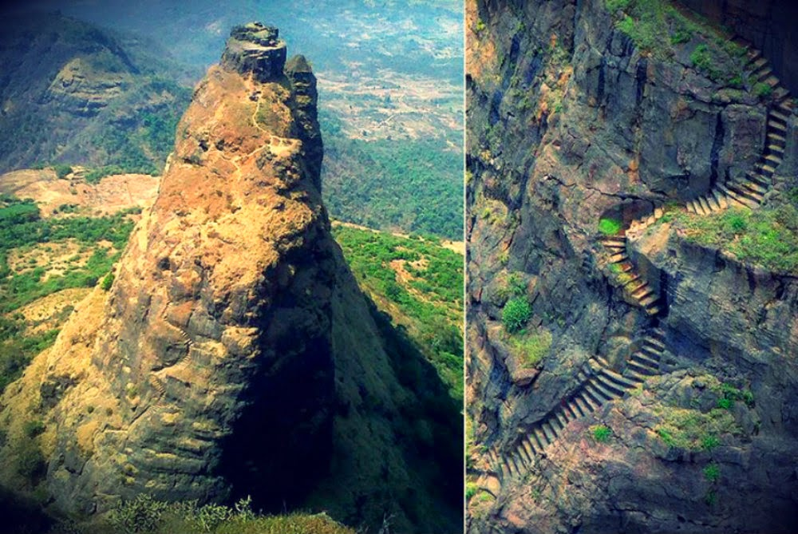

Location: Panvel, Raigad district of Maharashtra, India
Elevation: 2300 ft approx.
Mountain range: Sahyadri Range
Best Time to Visit: Winter
Difficulty Level: Hard
Duration: 1 Day
Base Village: Thakurwadi
Description:
Kalavantin Durg Trek is very difficult category trek in the sahyadri region. Its highly exposed without any railings which makes it so difficult and thrilled trek. It is not recommended for beginners.
The trek to Kalavantin Durg (fort) starts from Thakurwadi village.
How to reach Thakurwadi village with Private Transport?
You can drive all the way till the parking lot (Google Maps Location) in Thakurwadi village from where the trek starts. People on bikes ride beyond the parking lot till the check post. This place is near Panvel and hence it is very well accessible from Mumbai as well as Pune.
How to reach Thakurwadi village with Public transport?
People traveling from Mumbai as well as Pune can come to Panvel railway station by public transport and then hire an auto or tumtum (7-seater auto) till the base village Thakurwadi.
Difficulty level is Medium in Winter and Summer and Kalavantin is very difficult to climb during monsoon.
In monsoon, rock cut steps are very slippery and that patches also dont have railings to have support.
Go with Hiking shoes only ( Action Trekking shoes ). Avoid footwear like Sandals, Chappals.
Avoid selfies while climbing rock-cut steps of Kalavantin fort trek.
If you are having good stamina then you can complete the adjacent fort, named "Prabalgad" on the same day.
Please refer below blog where we have listed all the necessary things to carry while going for a sahyadri mountain range trek.
{kind=link}
{kind=link}
{kind=link}